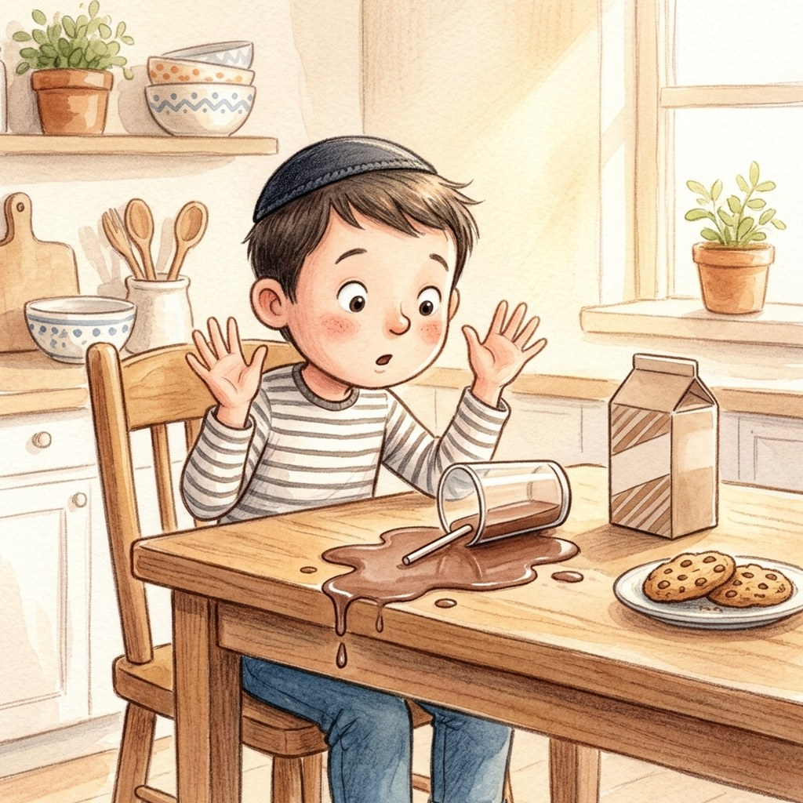

I've Got a Clue!
What If the Chocolate Milk Spills?
About this episode: Yedani made a bracha on a cup of chocolate milk, and the cat spilled it. Does he need a new bracha on the next cup? And what about an orange that fell on the floor right after the bracha? A conversation between Yedani and the Rav.
0:00
--:--
We couldn't load the recording. Check your internet connection and try again.